阶段清楚
孩子不同月龄的喂养选择、转段准备和家庭沟通有章法，不再临时抱佛脚。
AUSNUTRIA · 小红书婴幼儿奶粉营销策略方案
婴幼儿奶粉不是冲动消费品。小红书上的关键任务，不只是让澳优被看见，而是让澳优在用户真正开始比较之前，成为他们愿意收藏、咨询、反复核验的信息来源。
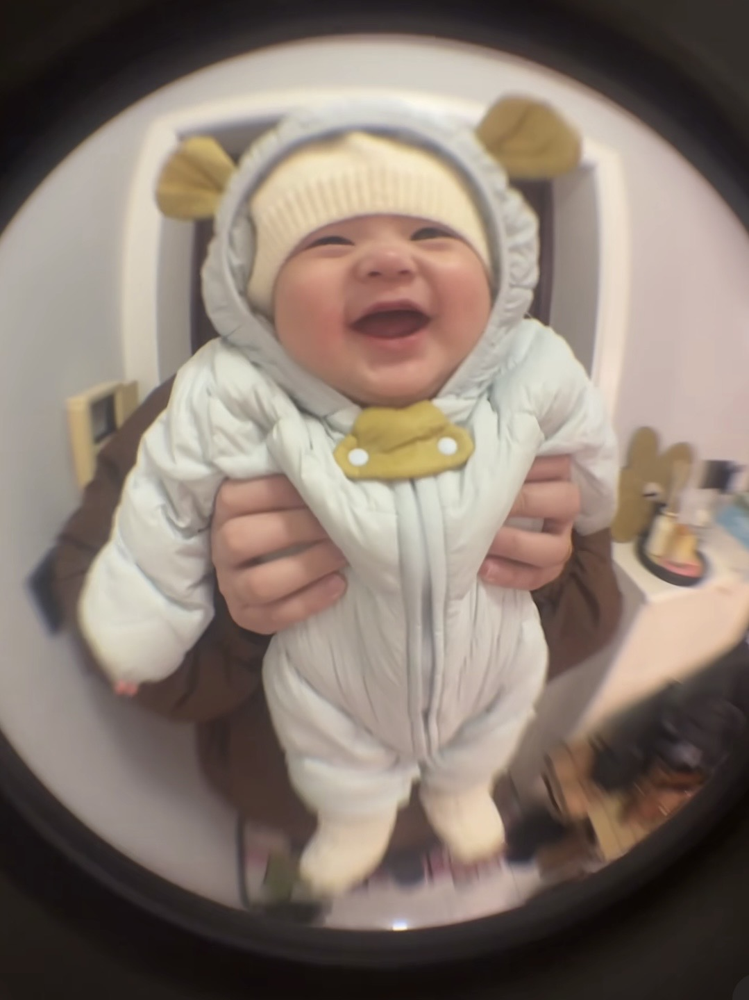
奶粉内容如果只做“产品卖点展示”，很容易落入成分、价格和渠道的碎片化竞争。真正能进入用户心里的内容，要先回答父母在家庭决策里最怕的那件事：我是不是选得有依据。
孩子不同月龄的喂养选择、转段准备和家庭沟通有章法，不再临时抱佛脚。
产品资质、适用月龄、包装信息、官方渠道和客服入口都能被看见、被复核。
下单前知道该问什么、查什么、怎么和家人统一标准，降低高信任成本。
强调配方、奶源、营养成分、价格、渠道和促销信息。
帮助父母从“产生问题”走到“建立信任”，再完成“购买确认”。

奶粉用户决策路径可拆为三段。不同达人层级和内容形态，正在承担理性解释、真实生活渗透和问题场景抢占的不同任务。澳优要竞争的不是单点曝光，而是每个关键节点的进入机会。
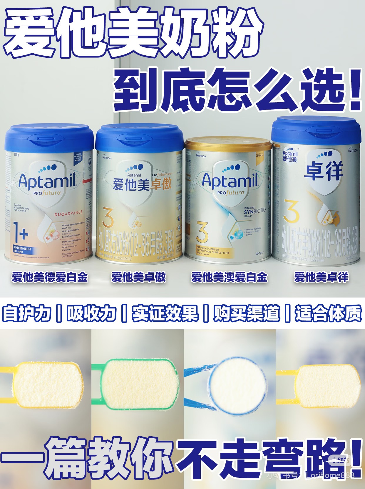
信任建立 · 中高粉测评/对比
惠氏在 200,001-300,000 粉层“奶粉测评/对比”内容占比。中高粉达人更像选奶决策顾问。
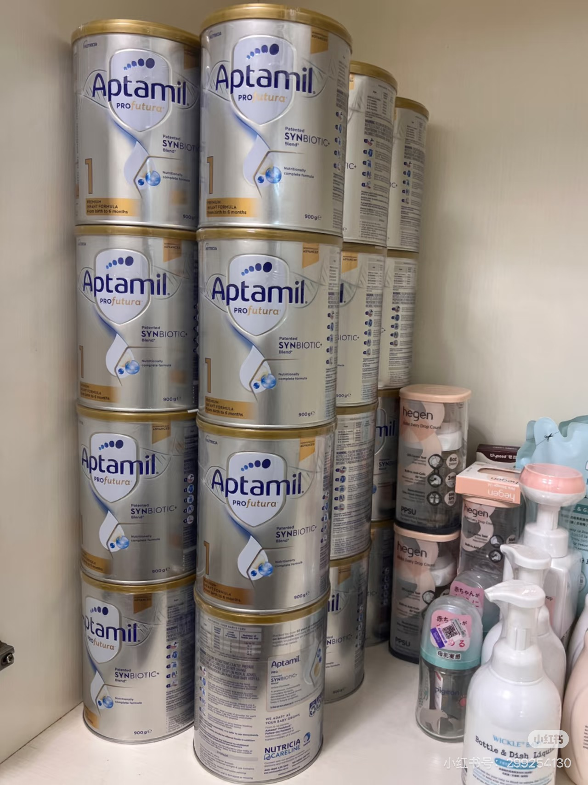
购买确认 · 低粉晒单/囤货
惠氏在 1,000-5,000 粉层“购物晒单/囤货”内容占比。低粉内容承接临门一脚。
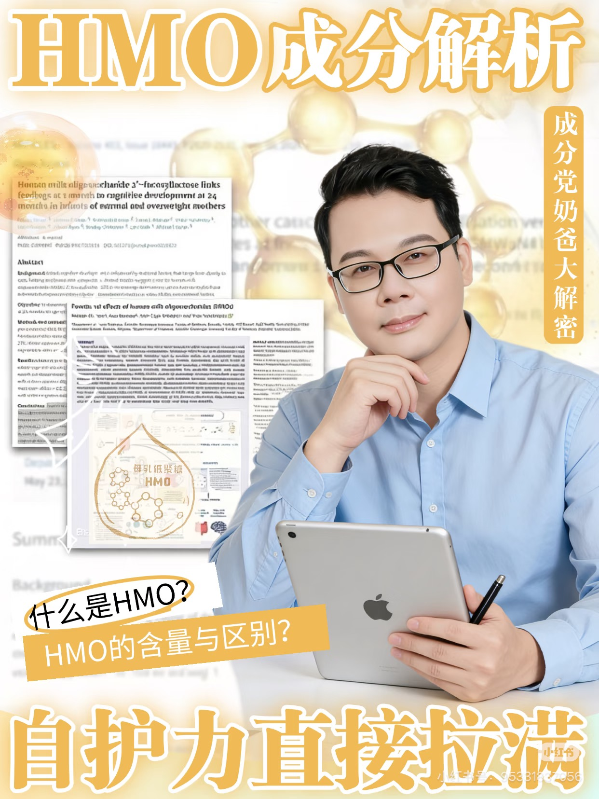
问题进入 · 问题场景搜索
a2 在 50,001-100,000 粉层“敏感肠胃/特殊需求”内容占比。问题场景常发生在购买决策前夜。
数据来源：小红书 2025.06-2026.06 奶粉行业内容数据；基于品牌关键词检索及蒲公英达人匹配，筛选粉丝量 >200 达人内容，最终有效样本 137,897 条，覆盖 22 个奶粉品牌。
低粉内容不是简单补量，而是把品牌放进真实购买语境里，帮助用户完成临门一脚：有没有真实妈妈在买、是否适合长期日常购买、现在买是否划算、哪里买和怎么买更安心。
惠氏 · 1000-5000 粉层
该层级 Top1。低粉内容更像真实购买场景，用晒单和囤货理由承接临门一脚。
飞鹤 · 1000-5000 粉层
该层级 Top2。活动内容把品牌触点落到线下、门店和可参与机制中。
飞鹤 · 1000-5000 粉层
该层级 Top3。促销与导购内容降低购买动作的不确定感，强化“现在怎么买”。

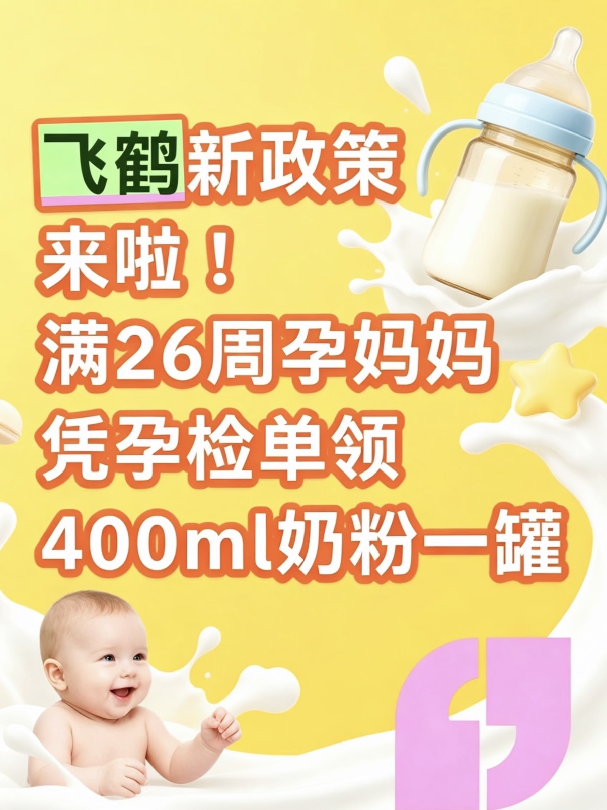
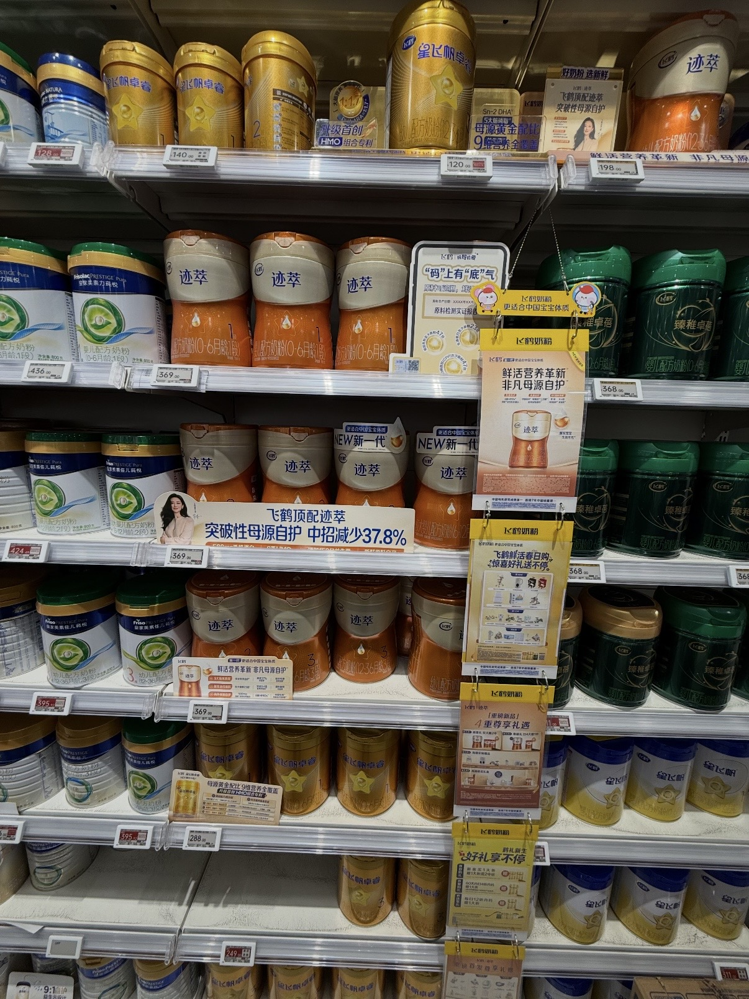
数据来源：小红书 2025.06-2026.06 奶粉行业内容数据；基于品牌关键词检索及蒲公英达人匹配，筛选粉丝量 >200 达人内容，最终有效样本 137,897 条，覆盖 22 个奶粉品牌。
爱他美、a2、合生元持续绑定“敏感肠胃 / 特殊需求”等问题场景。这类内容发生在购买决策前夜，用户带着具体问题主动搜索时，品牌更容易进入高质量比较路径。
爱他美 · 10,001-50,000 粉层
该内容形态在腰部达人层级居前，适合承接“宝宝具体问题”相关搜索。
a2 · 10,001-50,000 粉层
中腰部达人持续放大问题场景，形成稳定内容心智。
合生元 · 50,001-100,000 粉层
功能型问题内容在腰部达人层级处于前列，帮助品牌提前进入比较路径。


数据来源：小红书 2025.06-2026.06 奶粉行业内容数据；基于品牌关键词检索及蒲公英达人匹配，筛选粉丝量 >200 达人内容，最终有效样本 137,897 条，覆盖 22 个奶粉品牌。
中高粉达人更像“选奶决策顾问”。她们帮助用户理解差异、降低风险，并推动品牌进入候选清单。
美素佳儿
“奶粉测评 / 对比”内容占比。
惠氏
“奶粉测评 / 对比”内容占比。
爱他美
“奶粉测评 / 对比”内容占比。
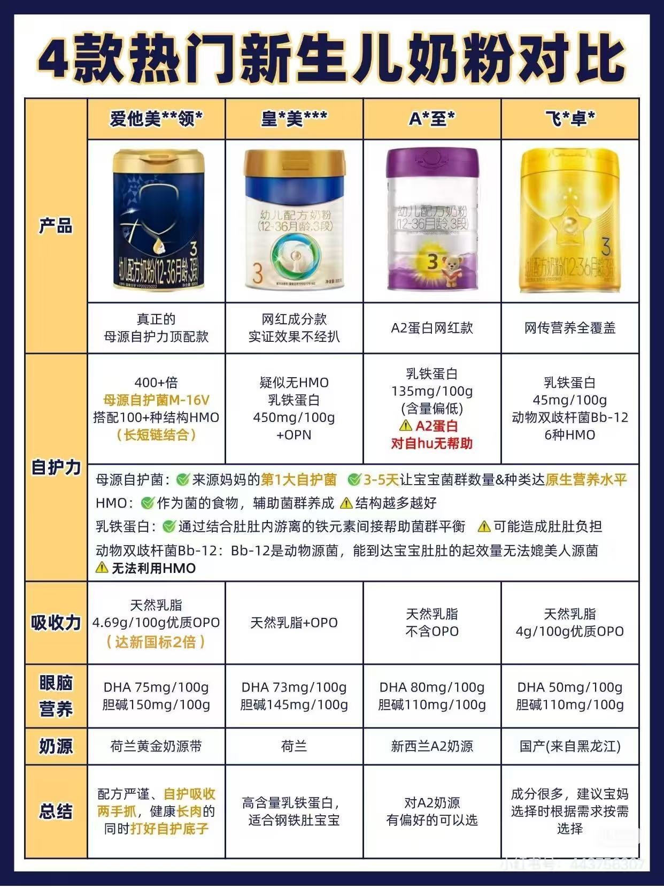


数据来源：小红书 2025.06-2026.06 奶粉行业内容数据；基于品牌关键词检索及蒲公英达人匹配，筛选粉丝量 >200 达人内容，最终有效样本 137,897 条，覆盖 22 个奶粉品牌。
A2 在高粉头部达人投放中占比达到 44.44%，明显高于行业平均水平。其重点不是单纯追求流量覆盖，而是借助高认同感人设，把产品卖点转化为育儿理念与身份认同。
A2 · 高粉头部达人
在高粉头部达人投放中占比明显高于行业平均，说明 A2 更重视高影响力账号的价值观表达能力。
人设选择
通过“留学妈妈”“职场精英妈妈”等人设，持续强化品牌高端、专业与国际化认知。
内容任务
借助头部达人更强的生活方式表达与价值观输出能力，把产品卖点转译成育儿理念。
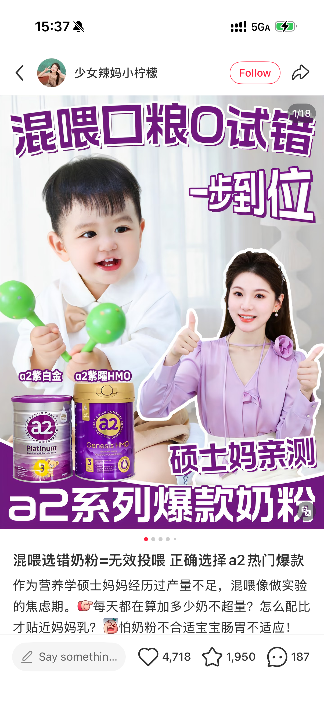
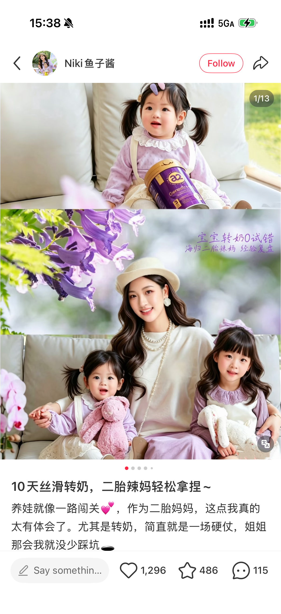
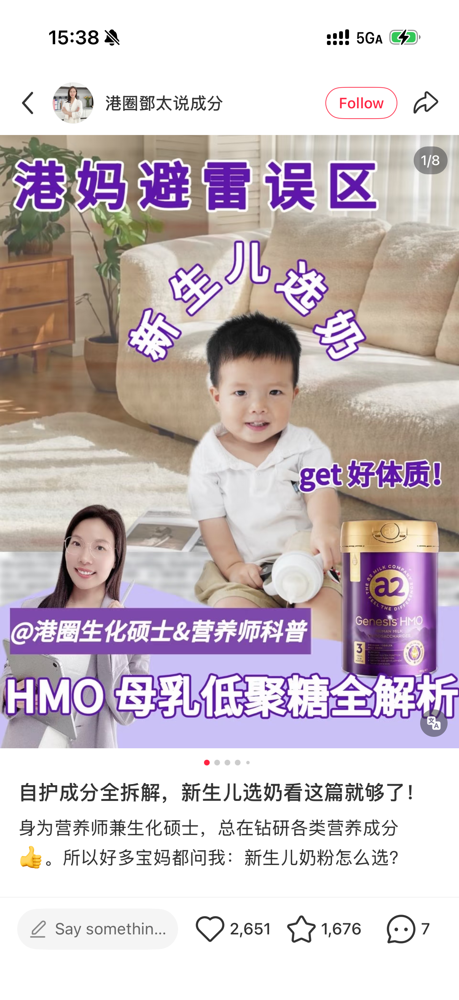
数据来源：小红书 2025.06-2026.06 奶粉行业内容数据；基于品牌关键词检索及蒲公英达人匹配，筛选粉丝量 >200 达人内容，最终有效样本 137,897 条，覆盖 22 个奶粉品牌。
回到新手父母真实的选奶过程，帮助澳优在用户开始比较之前先进入决策路径。
Layer 01
用低粉达人、真实妈妈和素人号内容，进入月龄、转奶、喂养焦虑、家庭沟通等搜索讨论及曝光路径。
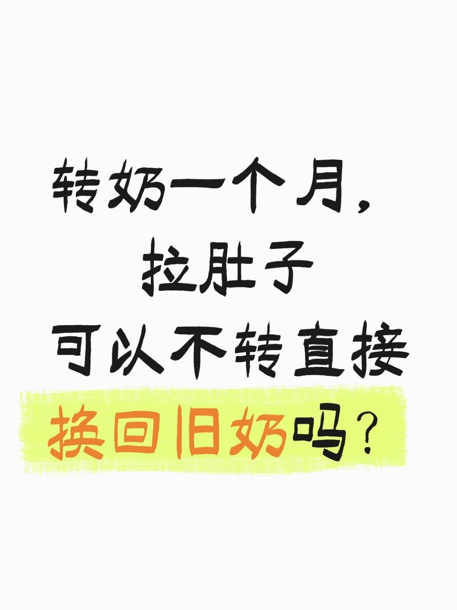
Layer 02
用中高粉达人、专业测评、横向对比、成分解释与信息核验，帮助澳优进入品牌候选清单。
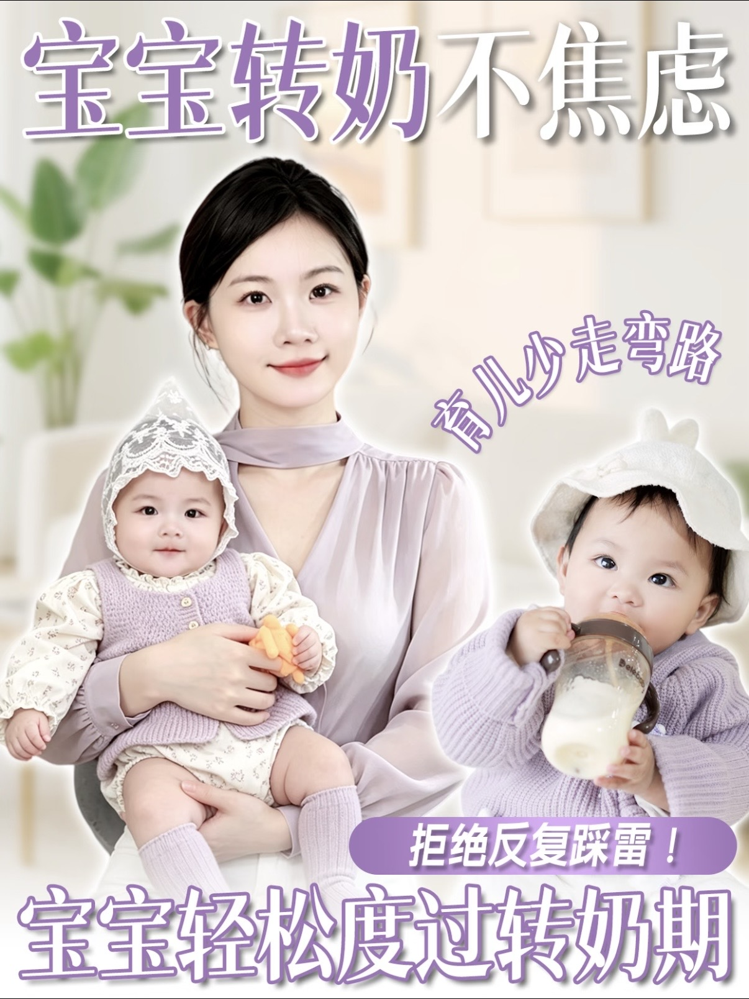
Layer 03
用晒单、囤货理由、购买攻略、官方客服和活动承接，降低用户下单前的不确定感。
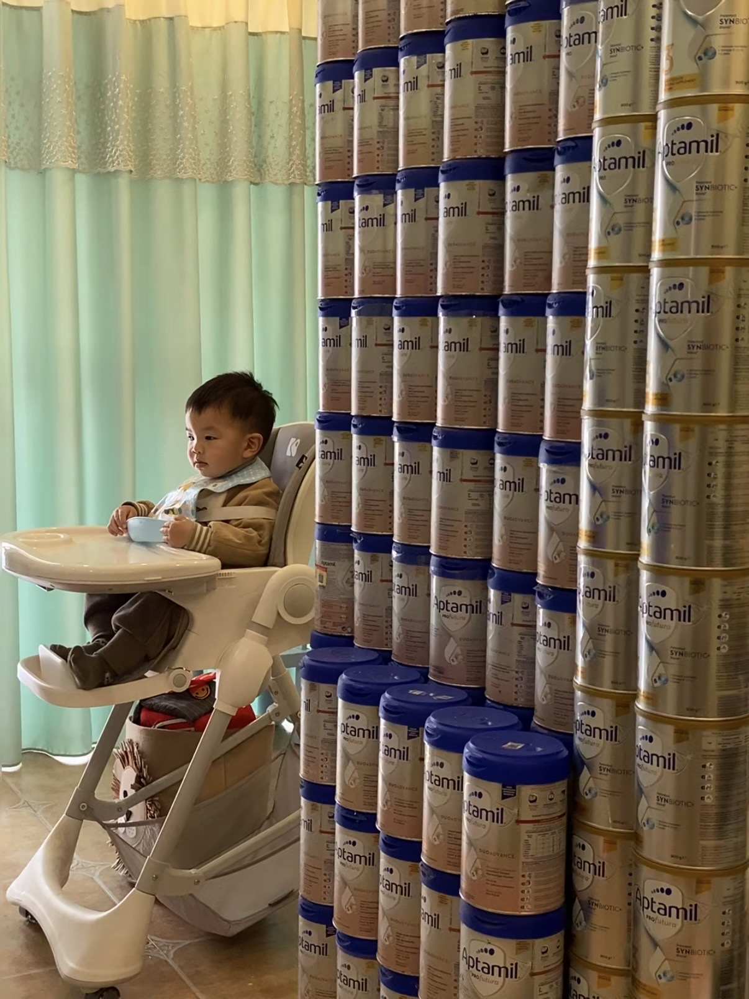
以“投前生产内容、投中提升确定性、投后度量全价值”的策略结构，把达人选择从账号清单升级为内容经营链路。
从品类购买人群、本品潜在人群、竞品已教育人群中，找到澳优的机会家庭。
用内容任务反推达人类型，避免所有达人讲同一套卖点。
粗筛看内容类型，细筛看内容策略、热点洞察、历史合作、粉丝画像和商业配合度。
这不是三群完全分开的用户，而是家庭在 0-36 月龄喂养周期里的三种典型状态。同一个家庭，也可能从孕晚期准备逐渐进入转段磨合，再进入长期购买规划。
在小红书，奶粉决策不是一次完成。用户先寻找“自己不慌”的理想状态，再代入真实喂养生活，最后才会用理性信息确认是否进入购买。
让前置教育、真实喂养和理性转化分别承担搜索、收藏、比较、咨询和购买确认的任务。
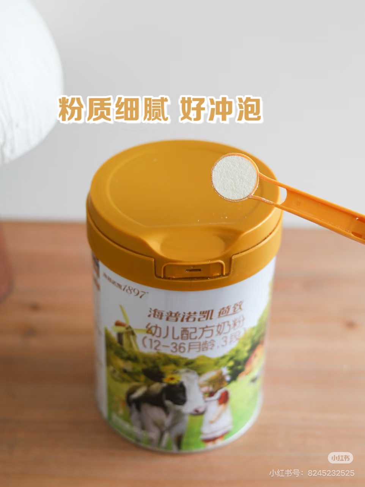


目标：点击率 / 收藏率 / 曝光入口
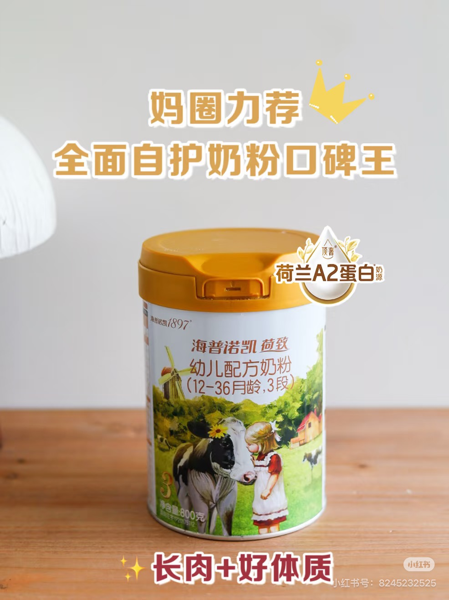


目标：曝光率 / 信任感 / 真实讨论
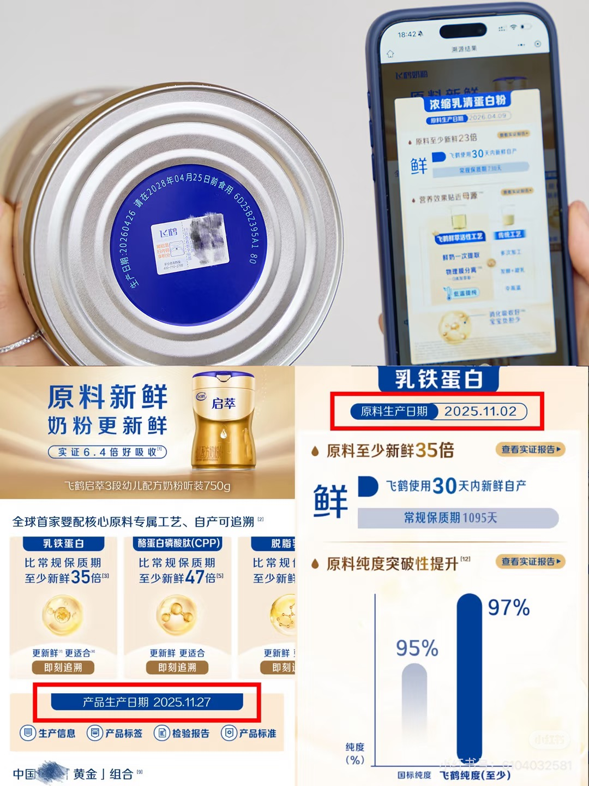


目标：进店转化率 / 加购 / 官方承接
参考红白咨询图的“背景 - 解法 - 收货价值”结构，把选号机制做成一张经营矩阵：上层定标准，中层搭链路，下层看价值。
短视频、直播、视频笔记、服务卖点；负责种草信息生产。
搜索承接、品牌词/品类词露出；负责高意图用户拦截。
电话咨询、企业私信、客服承接；负责下单前疑虑消除。
品牌号、店铺、商品页、线下门店，承接官方核验。
萌宝主页、评论关系、反馈通道，沉淀高频问题。
达人数据、内容数据、搜索数据，反哺下一轮 brief。
这套内容体系不是一次性投放，而是持续迭代。优化逻辑很简单：用户缺什么判断依据，内容就补什么资产。
前置教育
如果用户频繁问“我家月龄怎么看”，补月龄对照表、选奶清单和官方客服问题模板。
真实喂养
如果场景共鸣强但咨询弱，补冲调流程、夜间动线、转段记录和家庭分工模板。
理性转化
如果用户接近购买仍犹豫，补官方渠道核验、产品线问法、囤货标准和活动期清单。
Final Thought
澳优在小红书上不应只被定义为一罐奶粉，而要成为新手父母选奶过程里的信息整理者、真实场景陪伴者和理性决策证据提供者。真正有效的内容，不是把澳优讲得更响，而是把父母的选择过程讲得更清楚

本次竞品分析基于小红书平台内容数据开展，统计周期覆盖 2025 年 6 月 1 日至 2026 年 6 月 1 日。研究采用「品牌关键词检索 + 达人信息匹配」的数据采集方式，以“奶粉 + 品牌词”作为核心检索口径，覆盖爱他美、飞鹤、君乐宝、美素佳儿、A2、至初、合生元、启赋、美赞臣等核心品牌。
以“奶粉 + 品牌词”为核心口径，采集小红书主贴数据。
通过 GPT 规则完成内容形态与品牌归一标注。
关联蒲公英平台达人信息，校准账号与粉丝层级。
筛选粉丝量大于 200 的博主内容，处理重复与异常值。
按品牌、粉丝层级和内容形态计算占比，形成竞品洞察。
post_gpt_tags_pgy_price；数据链路为小红书主贴数据 → GPT 规则完成内容形态与品牌打标 → 关联蒲公英达人信息；主要分析字段包括品牌归一、内容形态、达人粉丝数、蒲公英达人匹配状态。
这一页作为附录，主要用于说明本方案中的竞品判断和百分比数据来自统一口径的数据清洗与达人匹配，不是单篇笔记观察或主观抽样。
以下为内容形态打标字段 content_category 的主要取值及含义概要，用于解释竞品内容占比计算中的分类口径。
| content_category 取值 | 含义概要 |
|---|---|
| 待产包/孕期 | 待产包、孕晚期、月子中心、第一口奶等 |
| 品牌活动/线下活动 | 妈妈班、星妈会、研学、沙龙、线下报名等 |
| 补贴促销/门店导购 | 育儿补贴、领奶粉、新客、顾问、优惠券等 |
| 购物晒单/囤货 | 囤货、晒单、香港购物、开箱等 |
| 敏感肠胃/特殊需求 | 敏宝、水解、过敏、玻璃胃等 |
| 羊奶粉 | 羊乳、羊奶粉品类及相关品牌词 |
| 有机奶粉 | 有机认证、有机牧场等 |
| HMO奶粉 | HMO、母乳低聚糖相关 |
| A2奶粉 | A2 蛋白赛道（与品牌 a2 可并存） |
| 长肉追高 | 追肉、追高、儿保、体重等 |
| 自护力/免疫力 | 自护力、乳铁蛋白（非测评语境）等 |
| 奶粉测评/对比 | 测评、横评、PK、选奶攻略等 |
| 选奶求助/推荐 | 求推荐、好纠结、选哪个等 |
| 单品种草/使用反馈 | 种草、空瓶、回购、亲测等 |
| 育儿生活场景 | 幼儿园、露营、遛娃、成长记录等 |
| 喂养知识/科普 | 转奶、冲泡、水奶、喂奶科普等 |
| 其他 | 未命中以上规则 |
高转化封面形式资产库不是素材堆放，而是把被验证过的封面经验归入用户决策路径。封面先回答用户为什么愿意点进来，正文再回答用户如何理解，评论和私信承接用户如何继续决策。

Click · 点击进入型
用户刷到奶粉内容时，第一反应往往不是“这个产品有什么卖点”，而是“这是不是一条真实、有用、和我有关的内容”。

Trust · 信任建立型
信任建立型封面要强化信息可读和判断有据，让用户第一眼知道：这条笔记可以收藏，也可以转发给家人一起看。

Convert · 转化临门型
转化临门型封面不能只做产品展示，而要给出明确行动线索。用户不是被催着下单，而是被帮助完成购买前确认。
每组选择代表性封面，用于说明不同策略价值的视觉表达：真实场景拉动点击、测评信息建立信任、促销与好评完成转化承接。


后续内容不建议每条笔记重新凭感觉定封面，而要让每一张封面都对应明确的内容任务，并在 brief 中同步约定选题方向、封面形式、达人类型与转化目标。
| 内容任务 | 优先封面形式 | 适配达人类型 | 转化目标 |
|---|---|---|---|
| 前置教育 / 搜索进入 | 科普清单、产品及宝宝场景、手持产品图 | 母婴科普达人、孕产生活方式博主、真实育儿 KOC | 点击率、收藏率、评论提问 |
| 信任建立 / 候选清单 | 测评图、产品形态图、截图背景拼图 | 中高粉测评达人、育儿消费决策达人 | 收藏率、转发给家人、私信咨询 |
| 购买确认 / 转化承接 | 产品囤货图、大字报图、大促信息拼图、购物好评截图 | 低粉 KOC、素人号、品牌号与客服承接 | 下单前核验、活动咨询、加购转化 |